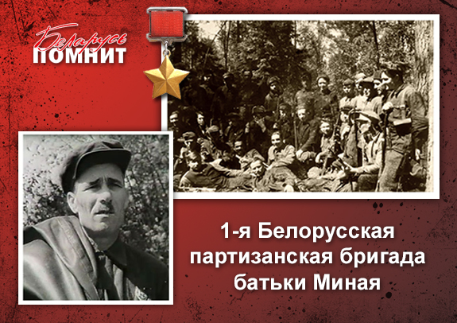

8 апреля 1942 года в Витебской области была создана 1-я Белорусская партизанская бригада под командованием М.Ф.Шмырёва и Р.В.Шкредо. К середине 1942 года было уже 14 партизанских бригад, к концу года — 56, а к концу 1943 года — 180 партизанских бригад.
1-я Белорусская бригада действовала на оккупированной территории Витебского, Суражского и Городокского районов. Она была создана на базе отдельно действующих отрядов М.Ф.Шмырева («Бацькі Міная», образован в июле 1941, позднее присвоено имя командира Р.С.Курмелева) А.П.Дика, Д.Ф.Райцева и М.Ф.Бирюлина. В июле 1942 из бригады выделились 200 партизан для формирования диверсионной партизанской бригады Белорусской имени Ленина, в сентябре 1942 - отряд Д.Ф.Райцева (на его базе создана партизанская бригада имени Краснознаменного Ленинского комсомола), в феврале 1943 - отряд М.Ф.Бирюлина (на его базе создана 1-я Витебская партизанская бригада), в июле 1943 - отряд А.Д.Гурко (бывший А.П.Дика, позднее развернутый в 1-ю Белорусскую партизанскую бригаду второго состава). Командиры 1-ой Белорусской бригады М.Ф.Шмырев (до ноября 1942), Я.З.Захаров, комиссары Р.В.Шкредо, П.Р.Ковалевский (исполняющий обязанности).
С первых дней оккупации отряд «Бацькі Міная» совершал диверсии на дорогах Сураж - Усвяты, Сураж - Велиж, Велиж - Усвяты, нападал на вражеские гарнизоны. В сентябре 1941 разгромил гарнизон в городском поселке Сураж. В 1942 партизаны вместе с частями Красной Армии освободили территорию части Суражского и Витебского районов, которая входила в Суражскую партизанскую зону, охраняли и защищали южные рубежи зоны – «Витебские (Сурожские) ворота», обеспечивали через них пути сообщений с советским тылом. Через «Витебские ворота» на Большую землю уходили мирные жители, новобранцы, перегонялся скот, вывозилось зерно, здесь же партизаны получали оружие, проходили армейские диверсионно-разведывательные группы. Также формировали и посылали группы и отряды в глубокую разведку и налаживания связи с партизанскими отрядами других районов и областей. Эти «ворота» просуществовали около шести месяцев, до сентября 1942 года.
Партизанская зона, контролируемая Батькой Минаем, была у гитлеровцев бельмом на глазу и, безусловно, осложняла жизнь противнику, так как задерживались поставки продовольствия, боеприпасов, также переброска личного состава из одного пункта в другой. Каратели стремились окружить и уничтожить партизан в треугольнике Городок — Сураж — Межа, захватить работоспособное население для вывоза в Германию, создать безопасность движения на железной дороге Витебск — Городок — Невель, помешать проникновению через этот район партизан за линию фронта, боевому взаимодействию партизан с частями Красной Армии.
Партизаны нападали на вражеские гарнизоны и опорные пункты в деревнях Малая Любщина, Большая Любщина (в мае 1942 г.), Смоловка (август 1942 г.) Суражского, Пунища (декабрь 1942 г.) Витебского районов, подорвали нефтебазу и уничтожили склады с зерном в Городке (май 1942 г.). Нанесли удары по железным и шоссейным дорогам Витебск - Городок, Витебск - Полоцк, по водной коммуникации на реке Двина, захватили катер и моторную лодку противника (май 1942 г.), сорвали судоходство по Двине в навигацию 1942 - 1943 гг.
Именно на долю партизан 1-й Белорусской партизанской бригады и других отрядов этой зоны выпали одни из самых страшных карательных экспедиций гитлеровцев : «Клетка обезьяны» (декабрь 1942 года), «Зимний лес» (январь 1943 года), «Соломенный мешок» (февраль 1943 года), «Шаровая молния» (февраль 1943 года), «Громовой удар» (март 1943 года), «Майская гроза» (май 1943 года). Наиболее тяжёлой для партизан оказалась операция «Шаровая молния»: общая численность гитлеровцев — 36 тысяч солдат и офицеров с поддержкой самолётов и 10 бронемашин. В кольце фашистов оказалось 9 тысяч партизан и более за 20 тысяч местных жителей. Патриоты стремились контратаками помешать противнику сконцентрировать силы и захватить плацдарм на берегах рек, что окружали партизанскую зону. Самоотверженно вели бои с карателями, пробивались группами через тесные цепи врага, часто в рукопашной схватке. Количественной состав бригады достигал 1500 - 2000 партизан. В боях с противником бригада понесла тяжелые потери. Только во время карательных операций с 14 февраля по 19 марта 1943 года бригада потеряла 669 человек (убито 110, ранено 52, пропали без вести 224, вышли в советский тыл 98, вошли в состав других бригад и отрядов 185 человек).